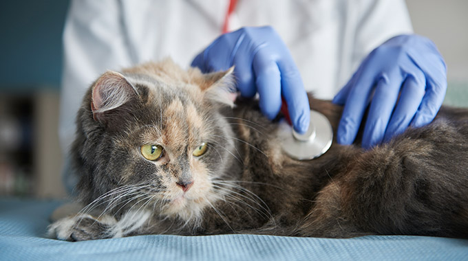
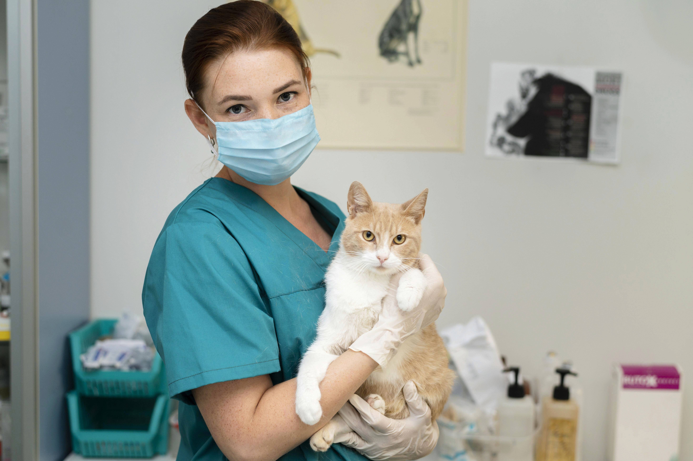
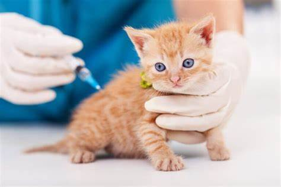
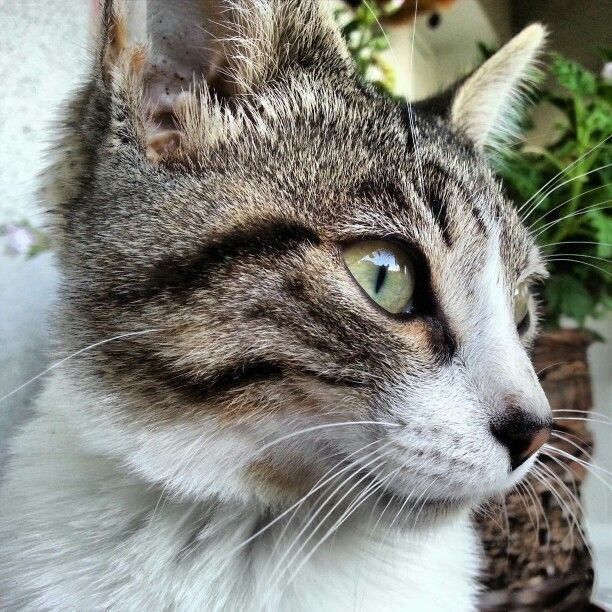

Nuestros Servicios

Consulta Felina / Feline Appointment
Atención de médico certificado Fear Free (Libre de miedo) para tu felino.
40 min
$600
Agendar cita

Seguimiento Felino / Feline Follow-up
Atención de seguimiento por un médico certificado Fear Free.
20 min
$450
Agendar cita

Vacunación Felina / Feline Vaccination
Vacunación realizada por un médico certificado Fear Free (Libre de miedo).
25 min
$400
Agendar cita



Seguimiento Canino/ Canine Follow-up
Atención de un médico certificado Fear Free (Libre de miedo).
20 min
$450
Agendar cita
Consulta Canina/ Canine Appointment
Atención de un médico certificado Fear Free (Libre de miedo).
40 min
$600
Agendar cita

Vacunación Canina / Canine Vaccination
Atención de un médico certificado Fear Free (Libre de miedo).
25 min
$400
Agendar cita

Baño Canino perro grande-gigante
Para nuestros perros de pelño largo y grandes- for our large and giant dogs.
2 h
$450
Agendar cita
Cerfiticado Nacional/ Travel Certificate
Certificado de salud para viajar/ Health Certificate for travel.
20 min
$450
Agendar cita
Cerfiticado Internacional/ International Certificate
Certificado de salud para viajar internacionalmente/ International Health Certificate for travel.
20 min
$650
Agendar cita
Cerfiticado gusano barrenador/ Worm Repellent Certificate
Certificado de salud de los animales mascotas yt de servicio como libres de GBG / Health Certificate for pets.
30 min
$1,000
Agendar cita